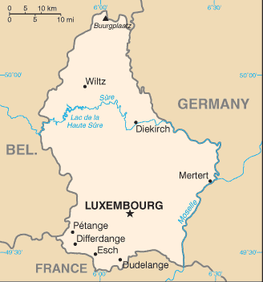
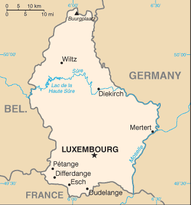

-
Introduction :: Luxembourg
-
Background:Founded in 963, Luxembourg became a grand duchy in 1815 and an independent state under the Netherlands. It lost more than half of its territory to Belgium in 1839 but gained a larger measure of autonomy. In 1867, Luxembourg attained full independence under the condition that it promise perpetual neutrality. Overrun by Germany in both world wars, it ended its neutrality in 1948 when it entered into the Benelux Customs Union and when it joined NATO the following year. In 1957, Luxembourg became one of the six founding countries of the EEC (later the EU), and in 1999 it joined the euro currency zone.
-
Geography :: Luxembourg
-
Location:Western Europe, between France and GermanyGeographic coordinates:49 45 N, 6 10 EMap references:EuropeArea:total: 2,586 sq kmland: 2,586 sq kmwater: 0 sq kmcountry comparison to the world: 179Area - comparative:slightly smaller than Rhode Island; about half the size of DelawareLand boundaries:total: 327 kmborder countries (3): Belgium 130 km, France 69 km, Germany 128 kmCoastline:0 km (landlocked)Maritime claims:none (landlocked)Climate:modified continental with mild winters, cool summersTerrain:mostly gently rolling uplands with broad, shallow valleys; uplands to slightly mountainous in the north; steep slope down to Moselle flood plain in the southeastElevation:mean elevation: 325 melevation extremes: 133 m lowest point: Moselle River559 highest point: BuurgplaatzNatural resources:iron ore (no longer exploited), arable landLand use:agricultural land: 50.7% (2011 est.)arable land: 24% (2011 est.) / permanent crops: 0.6% (2011 est.) / permanent pasture: 26.1% (2011 est.)forest: 33.5% (2011 est.)other: 15.8% (2011 est.)Irrigated land:0 sq km (2012)Population distribution:most people live in the south, on or near the border with FranceNatural hazards:occasional floodingEnvironment - current issues:air and water pollution in urban areas, soil pollution of farmland; unsustainable patterns of consumption (transport, energy, recreation, space) threaten biodiversity and landscapesEnvironment - international agreements:party to: Air Pollution, Air Pollution-Nitrogen Oxides, Air Pollution-Persistent Organic Pollutants, Air Pollution-Sulfur 85, Air Pollution-Sulfur 94, Air Pollution-Volatile Organic Compounds, Biodiversity, Climate Change, Climate Change-Kyoto Protocol, Desertification, Endangered Species, Hazardous Wastes, Law of the Sea, Marine Dumping, Ozone Layer Protection, Ship Pollution, Tropical Timber 83, Tropical Timber 94, Wetlandssigned, but not ratified: Environmental ModificationGeography - note:landlocked; the only grand duchy in the world
-
People and Society :: Luxembourg
-
Population:605,764 (July 2018 est.)country comparison to the world: 171Nationality:noun: Luxembourger(s)adjective: LuxembourgEthnic groups:Luxembourger 52.1%, Portuguese 16%, French 7.6%, Italian 3.6%, Belgian 3.4%, German 2.2%, Spanish 1.1%, British 1%, other 13% (2018 est.)
note: data represent population by nationality
Languages:Luxembourgish (official administrative and judicial language and national language (spoken vernacular)) 55.8%, Portuguese 15.7%, French (official administrative, judicial, and legislative language) 12.1%, German (official administrative and judicial language) 3.1%, Italian 2.9%, English 2.1%, other 8.4% (2011 est.)Religions:Christian (predominantly Roman Catholic) 70.4%, Muslim 2.3%, other (includes Buddhist, folk religions, Hindu, Jewish) 0.5%, none 26.8% (2010 est.)Age structure:0-14 years: 16.74% (male 52,243 /female 49,183)15-24 years: 12.06% (male 37,391 /female 35,650)25-54 years: 44.18% (male 137,381 /female 130,252)55-64 years: 11.9% (male 36,670 /female 35,442)65 years and over: 15.11% (male 41,002 /female 50,550) (2018 est.)population pyramid: The World Factbook Field Image ModalEurope :: Luxembourg Print
The World Factbook Field Image ModalEurope :: Luxembourg Print Image DescriptionThis is the population pyramid for Luxembourg. A population pyramid illustrates the age and sex structure of a country's population and may provide insights about political and social stability, as well as economic development. The population is distributed along the horizontal axis, with males shown on the left and females on the right. The male and female populations are broken down into 5-year age groups represented as horizontal bars along the vertical axis, with the youngest age groups at the bottom and the oldest at the top. The shape of the population pyramid gradually evolves over time based on fertility, mortality, and international migration trends.
Image DescriptionThis is the population pyramid for Luxembourg. A population pyramid illustrates the age and sex structure of a country's population and may provide insights about political and social stability, as well as economic development. The population is distributed along the horizontal axis, with males shown on the left and females on the right. The male and female populations are broken down into 5-year age groups represented as horizontal bars along the vertical axis, with the youngest age groups at the bottom and the oldest at the top. The shape of the population pyramid gradually evolves over time based on fertility, mortality, and international migration trends.
For additional information, please see the entry for Population pyramid on the Definitions and Notes page under the References tab.Dependency ratios:total dependency ratio: 43.6 (2015 est.)youth dependency ratio: 23.5 (2015 est.)elderly dependency ratio: 20.1 (2015 est.)potential support ratio: 5 (2015 est.)Median age:total: 39.3 yearsmale: 38.7 yearsfemale: 39.9 years (2018 est.)country comparison to the world: 54Population growth rate:1.9% (2018 est.)country comparison to the world: 53Birth rate:11.6 births/1,000 population (2018 est.)country comparison to the world: 170Death rate:7.3 deaths/1,000 population (2018 est.)country comparison to the world: 123Net migration rate:15.5 migrant(s)/1,000 population (2017 est.)country comparison to the world: 2Population distribution:most people live in the south, on or near the border with FranceUrbanization:urban population: 91% of total population (2018)rate of urbanization: 1.55% annual rate of change (2015-20 est.)Major urban areas - population:120,000 LUXEMBOURG (capital) (2018)Sex ratio:at birth: 1.06 male(s)/female (2017 est.)0-14 years: 1.06 male(s)/female (2017 est.)15-24 years: 1.05 male(s)/female (2017 est.)25-54 years: 1.05 male(s)/female (2017 est.)55-64 years: 1.03 male(s)/female (2017 est.)65 years and over: 0.79 male(s)/female (2017 est.)total population: 1.01 male(s)/female (2017 est.)Mother's mean age at first birth:30.1 years (2015 est.)Maternal mortality rate:10 deaths/100,000 live births (2015 est.)country comparison to the world: 148Infant mortality rate:total: 3.4 deaths/1,000 live births (2018 est.)male: 3.8 deaths/1,000 live births (2018 est.)female: 3 deaths/1,000 live births (2018 est.)country comparison to the world: 205Life expectancy at birth:total population: 82.4 years (2018 est.)male: 79.9 years (2018 est.)female: 85 years (2018 est.)country comparison to the world: 16Total fertility rate:1.62 children born/woman (2018 est.)country comparison to the world: 178Health expenditures:6.6% of GDP (2014)country comparison to the world: 91Physicians density:2.92 physicians/1,000 population (2016)Hospital bed density:4.9 beds/1,000 population (2014)Drinking water source:improved: urban: 100% of populationrural: 100% of populationtotal: 100% of populationunimproved: urban: 0% of populationrural: 0% of populationtotal: 0% of population (2015 est.)Sanitation facility access:improved: urban: 97.5% of population (2015 est.)rural: 98.5% of population (2015 est.)total: 97.6% of population (2015 est.)unimproved: urban: 2.5% of population (2015 est.)rural: 1.5% of population (2015 est.)total: 2.4% of population (2015 est.)HIV/AIDS - adult prevalence rate:0.3% (2017 est.)country comparison to the world: 82HIV/AIDS - people living with HIV/AIDS:1,100 (2017 est.)country comparison to the world: 133HIV/AIDS - deaths:<100 (2017 est.)Obesity - adult prevalence rate:22.6% (2016)country comparison to the world: 74Education expenditures:4% of GDP (2014)country comparison to the world: 111School life expectancy (primary to tertiary education):total: 14 years (2012)male: 14 years (2012)female: 14 years (2012)Unemployment, youth ages 15-24:total: 18.9% (2016 est.)male: 19.7% (2016 est.)female: 18% (2016 est.)country comparison to the world: 69 -
Government :: Luxembourg
-
Country name:conventional long form: Grand Duchy of Luxembourgconventional short form: Luxembourglocal long form: Grand Duche de Luxembourglocal short form: Luxembourgetymology: from the Celtic "lucilem" (little) and the German "burg" (castle or fortress) to produce the meaning of the "little castle"Government type:constitutional monarchyCapital:name: Luxembourggeographic coordinates: 49 36 N, 6 07 Etime difference: UTC+1 (6 hours ahead of Washington, DC, during Standard Time)daylight saving time: +1hr, begins last Sunday in March; ends last Sunday in OctoberAdministrative divisions:12 cantons (cantons, singular - canton); Capellen, Clervaux, Diekirch, Echternach, Esch-sur-Alzette, Grevenmacher, Luxembourg, Mersch, Redange, Remich, Vianden, WiltzIndependence:1839 (from the Netherlands)National holiday:National Day (Birthday of Grand Duke HENRI), 23 June; note - this date of birth is not the true date of birth for any of the Royals, but the national festivities were shifted in 1962 to allow observance during a more favorable time of yearConstitution:history: previous 1842 (heavily amended 1848, 1856); latest effective 17 October 1868 (2016)amendments: proposed by the Chamber of Deputies or by the monarch to the Chamber; passage requires at least two-thirds majority vote by the Chamber in two successive readings three months apart; a referendum can be substituted for the second reading if approved by more than one-quarter of the Chamber members or by 25,000 valid voters; adoption by referendum requires a majority of all valid voters; amended many times, last in 2009 (2016)Legal system:civil law systemInternational law organization participation:accepts compulsory ICJ jurisdiction; accepts ICCt jurisdictionCitizenship:citizenship by birth: limited to situations where the parents are either unknown, stateless, or when the nationality law of the parents' state of origin does not permit acquisition of citizenship by descent when the birth occurs outside of national territorycitizenship by descent only: at least one parent must be a citizen of Luxembourgdual citizenship recognized: yesresidency requirement for naturalization: 7 yearsSuffrage:18 years of age; universal and compulsoryJudicial branch:highest courts: Supreme Court of Justice includes Court of Appeal and Court of Cassation (consists of 27 judges on 9 benches); Constitutional Court (consists of 9 members)judge selection and term of office: judges of both courts appointed by the monarch for lifesubordinate courts: Court of Accounts; district and local tribunals and courtsExecutive branch:chief of state: Grand Duke HENRI (since 7 October 2000); Heir Apparent Prince GUILLAUME (son of the monarch, born 11 November 1981)head of government: Prime Minister Xavier BETTEL (since 4 December 2013); Deputy Prime Minister Etienne SCHNEIDER (since 4 December 2013); Deputy Prime Minister Felix BRAZ (since 5 December 2018)cabinet: Council of Ministers recommended by the prime minister, appointed by the monarchelections/appointments: the monarchy is hereditary; following elections to the Chamber of Deputies, the leader of the majority party or majority coalition usually appointed prime minister by the monarch; deputy prime minister appointed by the monarch; prime minister and deputy prime minister are responsible to the Chamber of DeputiesLegislative branch:description: unicameral Chamber of Deputies or Chambre des Deputes (60 seats; members directly elected in multi-seat constituencies by party-list proportional representation vote; members serve 5-year terms); note - a 21-member Council of State appointed by the Grand Duke on the advice of the prime minister serves as an advisory body to the Chamber of Deputieselections: last held on 14 October 2018 (next to be held by October 2023)election results: percent of vote by party - CSV 28.3%, LSAP 17.6%, DP 16.9%, Green Party 15.1%, ADR 8.3%, Pirate Party 6.4%, The Left 5.5%, other 1.9%; seats by party - CSV 21, DP 12, LSAP 10, Green Party 9, ADR 4, Pirate Party 2, The Left 2; composition - men 46, women 14, percent of women 23.3%Political parties and leaders:Alternative Democratic Reform Party or ADR [Jean SCHOOS]
Christian Social People's Party or CSV [Marc SPAUTZ]
Democratic Party or DP [Corinne CAHEN]
Green Party [Francoise FOLMER, Christian KMIOTEK]
Luxembourg Socialist Workers' Party or LSAP [Claude HAAGEN]
The Left (dei Lenk/la Gauche) [collective leadership, Central Committee]
other minor partiesInternational organization participation:ADB (nonregional member), Australia Group, Benelux, BIS, CD, CE, EAPC, EBRD, ECB, EIB, EMU, ESA, EU, FAO, FATF, IAEA, IBRD, ICAO, ICC (national committees), ICCt, ICRM, IDA, IEA, IFAD, IFC, IFRCS, ILO, IMF, IMO, Interpol, IOC, IOM, IPU, ISO, ITSO, ITU, ITUC (NGOs), MIGA, NATO, NEA, NSG, OAS (observer), OECD, OIF, OPCW, OSCE, PCA, Schengen Convention, UN, UNCTAD, UNESCO, UNHCR, UNIDO, UNRWA, UPU, WCO, WHO, WIPO, WMO, WTO, ZCDiplomatic representation in the US:chief of mission: Ambassador Sylvie LUCAS (since 16 September 2016)chancery: 2200 Massachusetts Avenue NW, Washington, DC 20008telephone: [1] (202) 265-4171FAX: [1] (202) 328-8270consulate(s) general: New York, San FranciscoDiplomatic representation from the US:chief of mission: Ambassador James Randolph "Randy" EVANS (since 19 June 2018)embassy: 22 Boulevard Emmanuel Servais, L-2535 Luxembourg Citymailing address: Unit 3560, APO-AE 09126-3560 (official mail)telephone: [352] 46-01-23 00FAX: [352] 46-14-01Flag description:three equal horizontal bands of red (top), white, and light blue; similar to the flag of the Netherlands, which uses a darker blue and is shorter; the coloring is derived from the Grand Duke's coat of arms (a red lion on a white and blue striped field)National symbol(s):red, rampant lion; national colors: red, white, light blueNational anthem:name: "Ons Heemecht" (Our Motherland); "De Wilhelmus" (The William)lyrics/music: Michel LENTZ/Jean-Antoine ZINNEN; Nikolaus WELTER/unknownnote: "Ons Heemecht," adopted 1864, is the national anthem, while "De Wilhelmus," adopted 1919, serves as a royal anthem for use when members of the grand ducal family enter or exit a ceremony in Luxembourg
-
Economy :: Luxembourg
-
Economy - overview:
This small, stable, high-income economy has historically featured solid growth, low inflation, and low unemployment. Luxembourg, the only Grand Duchy in the world, is a landlocked country in northwestern Europe surrounded by Belgium, France, and Germany. Despite its small landmass and small population, Luxembourg is the fifth-wealthiest country in the world when measured on a gross domestic product (PPP) per capita basis. Luxembourg has one of the highest current account surpluses as a share of GDP in the euro zone, and it maintains a healthy budgetary position, with a 2017 surplus of 0.5% of GDP, and the lowest public debt level in the region.
Since 2002, Luxembourg’s government has proactively implemented policies and programs to support economic diversification and to attract foreign direct investment. The government focused on key innovative industries that showed promise for supporting economic growth: logistics, information and communications technology (ICT); health technologies, including biotechnology and biomedical research; clean energy technologies, and more recently, space technology and financial services technologies. The economy has evolved and flourished, posting strong GDP growth of 3.4% in 2017, far outpacing the European average of 1.8%.
Luxembourg remains a financial powerhouse – the financial sector accounts for more than 35% of GDP - because of the exponential growth of the investment fund sector through the launch and development of cross-border funds (UCITS) in the 1990s. Luxembourg is the world’s second-largest investment fund asset domicile, after the US, with $4 trillion of assets in custody in financial institutions.
Luxembourg has lost some of its advantage as a favorable tax location because of OECD and EU pressure, as well as the "LuxLeaks" scandal, which revealed advantageous tax treatments offered to foreign corporations. In 2015, the government’s compliance with EU requirements to implement automatic exchange of tax information on savings accounts - thus ending banking secrecy - has constricted banking activity. Likewise, changes to the way EU members collect taxes from e-commerce has cut Luxembourg’s sales tax revenues, requiring the government to raise additional levies and to reduce some direct social benefits as part of the tax reform package of 2017. The tax reform package also included reductions in the corporate tax rate and increases in deductions for families, both intended to increase purchasing power and increase competitiveness.
GDP (purchasing power parity):$62.11 billion (2017 est.)$60.71 billion (2016 est.)$58.9 billion (2015 est.)note: data are in 2017 dollars
country comparison to the world: 105GDP (official exchange rate):$62.53 billion (2017 est.) (2017 est.)GDP - real growth rate:2.3% (2017 est.)3.1% (2016 est.)2.9% (2015 est.)country comparison to the world: 142GDP - per capita (PPP):$105,100 (2017 est.)$105,400 (2016 est.)$104,600 (2015 est.)note: data are in 2017 dollars
country comparison to the world: 5Gross national saving:22.3% of GDP (2017 est.)23% of GDP (2016 est.)23.2% of GDP (2015 est.)country comparison to the world: 82GDP - composition, by end use:household consumption: 30.2% (2017 est.)government consumption: 16.5% (2017 est.)investment in fixed capital: 16.2% (2017 est.)investment in inventories: 1.1% (2017 est.)exports of goods and services: 230% (2017 est.)imports of goods and services: -194% (2017 est.)GDP - composition, by sector of origin:agriculture: 0.3% (2017 est.)industry: 12.8% (2017 est.)services: 86.9% (2017 est.)Agriculture - products:grapes, barley, oats, potatoes, wheat, fruits; dairy and livestock productsIndustries:banking and financial services, construction, real estate services, iron, metals, and steel, information technology, telecommunications, cargo transportation and logistics, chemicals, engineering, tires, glass, aluminum, tourism, biotechnologyIndustrial production growth rate:1.9% (2017 est.)country comparison to the world: 134Labor force:282,800 (2017 est.)note: data exclude foreign workers; in addition to the figure for domestic labor force, about 150,000 workers commute daily from France, Belgium, and Germany
country comparison to the world: 165Labor force - by occupation:agriculture: 1.1%industry: 20%services: 78.9% (2013 est.)Unemployment rate:5.8% (2017 est.)6.3% (2016 est.)country comparison to the world: 89Population below poverty line:NADistribution of family income - Gini index:30.4 (2013 est.)26 (2005 est.)country comparison to the world: 132Budget:revenues: 27.75 billion (2017 est.)expenditures: 26.8 billion (2017 est.)Taxes and other revenues:44.4% (of GDP) (2017 est.)country comparison to the world: 24Budget surplus (+) or deficit (-):1.5% (of GDP) (2017 est.)country comparison to the world: 23Public debt:23% of GDP (2017 est.)20.8% of GDP (2016 est.)note: data cover general government debt and include debt instruments issued (or owned) by government entities other than the treasury; the data include treasury debt held by foreign entities; the data include debt issued by subnational entities, as well as intragovernmental debt; intragovernmental debt consists of treasury borrowings from surpluses in the social funds, such as for retirement, medical care, and unemployment; debt instruments for the social funds are not sold at public auctions
country comparison to the world: 183Fiscal year:calendar yearInflation rate (consumer prices):2.1% (2017 est.)0% (2016 est.)country comparison to the world: 109Central bank discount rate:0% (31 December 2017)0% (31 December 2010)note: this is the European Central Bank's rate on the marginal lending facility, which offers overnight credit to banks in the euro area
country comparison to the world: 157Commercial bank prime lending rate:1.9% (31 December 2017 est.)1.98% (31 December 2016 est.)country comparison to the world: 186Stock of narrow money:$275.6 billion (31 December 2017 est.)$229.2 billion (31 December 2016 est.)note: see entry for the EU for money supply for the entire euro area; the European Central Bank (ECB) controls monetary policy for the 18 members of the Economic and Monetary Union (EMU); individual members of the EMU do not control the quantity of money circulating within their own borders
country comparison to the world: 18Stock of broad money:$275.6 billion (31 December 2017 est.)$229.2 billion (31 December 2016 est.)country comparison to the world: 18Stock of domestic credit:$128.5 billion (31 December 2017 est.)$109.9 billion (31 December 2016 est.)country comparison to the world: 51Current account balance:$3.112 billion (2017 est.)$2.988 billion (2016 est.)country comparison to the world: 34Exports:$15.99 billion (2017 est.)$16.37 billion (2016 est.)country comparison to the world: 74Exports - partners:Germany 25.6%, Belgium 17.6%, France 14%, Netherlands 5.1%, Italy 4.1%, UK 4.1% (2017)Exports - commodities:machinery and equipment, steel products, chemicals, rubber products, glassImports:$20.66 billion (2017 est.)$20.41 billion (2016 est.)country comparison to the world: 76Imports - commodities:commercial aircraft, minerals, chemicals, metals, foodstuffs, luxury consumer goodsImports - partners:Belgium 32%, Germany 24.9%, France 11.1%, US 5.7%, Netherlands 4.9% (2017)Reserves of foreign exchange and gold:$878 million (31 December 2017 est.)$974 million (31 December 2016 est.)country comparison to the world: 137Debt - external:$3.781 trillion (31 March 2016 est.)$3.806 trillion (31 March 2015 est.)country comparison to the world: 6Stock of direct foreign investment - at home:$11.21 billion (31 December 2008 est.)country comparison to the world: 95Stock of direct foreign investment - abroad:NA
Exchange rates:euros (EUR) per US dollar -0.885 (2017 est.)0.903 (2016 est.)0.9214 (2015 est.)0.885 (2014 est.)0.7634 (2013 est.) -
Energy :: Luxembourg
-
Electricity access:electrification - total population: 100% (2016)Electricity - production:334.5 million kWh (2016 est.)country comparison to the world: 178Electricity - consumption:6.475 billion kWh (2016 est.)country comparison to the world: 111Electricity - exports:1.42 billion kWh (2016 est.)country comparison to the world: 51Electricity - imports:7.718 billion kWh (2016 est.)country comparison to the world: 30Electricity - installed generating capacity:1.709 million kW (2016 est.)country comparison to the world: 118Electricity - from fossil fuels:25% of total installed capacity (2016 est.)country comparison to the world: 189Electricity - from nuclear fuels:0% of total installed capacity (2017 est.)country comparison to the world: 131Electricity - from hydroelectric plants:8% of total installed capacity (2017 est.)country comparison to the world: 122Electricity - from other renewable sources:67% of total installed capacity (2017 est.)country comparison to the world: 2Crude oil - production:0 bbl/day (2017 est.)country comparison to the world: 163Crude oil - exports:0 bbl/day (2017 est.)country comparison to the world: 156Crude oil - imports:0 bbl/day (2017 est.)country comparison to the world: 155Crude oil - proved reserves:0 bbl (1 January 2018 est.)country comparison to the world: 159Refined petroleum products - production:0 bbl/day (2017 est.)country comparison to the world: 167Refined petroleum products - consumption:59,850 bbl/day (2017 est.)country comparison to the world: 96Refined petroleum products - exports:0 bbl/day (2017 est.)country comparison to the world: 173Refined petroleum products - imports:59,020 bbl/day (2017 est.)country comparison to the world: 73Natural gas - production:0 cu m (2017 est.)country comparison to the world: 160Natural gas - consumption:792.8 million cu m (2017 est.)country comparison to the world: 96Natural gas - exports:0 cu m (2017 est.)country comparison to the world: 141Natural gas - imports:792.8 million cu m (2017 est.)country comparison to the world: 63Natural gas - proved reserves:0 cu m (1 January 2014 est.)country comparison to the world: 161Carbon dioxide emissions from consumption of energy:10.72 million Mt (2017 est.)country comparison to the world: 103
-
Communications :: Luxembourg
-
Telephones - fixed lines:total subscriptions: 275,300 (2017 est.)subscriptions per 100 inhabitants: 46 (2017 est.)country comparison to the world: 118Telephones - mobile cellular:total subscriptions: 794,000 (2017 est.)subscriptions per 100 inhabitants: 134 (2017 est.)country comparison to the world: 163Telephone system:general assessment: highly developed, completely automated and efficient system; by 2020 the government’s program is to provide a 1Gb/s service to all citizens, and to make Luxembourg the first fully fibred country in Europe; new law requiring SIM cards be registered has slowed down growth for mobile subscribers; 5G launch by 2020 (2017)domestic: fixed-line teledensity about 46 per 100 persons; nationwide mobile-cellular telephone system with market for mobile-cellular phones virtually saturated with 134 per 100 mobile-cellular (2017)international: country code - 352 (2016)Broadcast media:Luxembourg has a long tradition of operating radio and TV services for pan-European audiences and is home to Europe's largest privately owned broadcast media group, the RTL Group, which operates 46 TV stations and 29 radio stations in Europe; also home to Europe's largest satellite operator, Societe Europeenne des Satellites (SES); domestically, the RTL Group operates TV and radio networks; other domestic private radio and TV operators and French and German stations available; satellite and cable TV services available (2016)Internet country code:.luInternet users:total: 567,698 (July 2016 est.)percent of population: 97.5% (July 2016 est.)country comparison to the world: 148Broadband - fixed subscriptions:total: 212,900 (2017 est.)subscriptions per 100 inhabitants: 36 (2017 est.)country comparison to the world: 107
-
Transportation :: Luxembourg
-
National air transport system:number of registered air carriers: 3 (2015)inventory of registered aircraft operated by air carriers: 119 (2015)annual passenger traffic on registered air carriers: 1,830,972 (2015)annual freight traffic on registered air carriers: 6,309,473,324 mt-km (2015)Civil aircraft registration country code prefix:LX (2016)Airports:2 (2013)country comparison to the world: 202Airports - with paved runways:total: 1 (2017)over 3,047 m: 1 (2017)Airports - with unpaved runways:total: 1 (2013)under 914 m: 1 (2013)Heliports:1 (2013)Pipelines:142 km gas, 27 km refined products (2013)Railways:total: 275 km (2014)standard gauge: 275 km 1.435-m gauge (275 km electrified) (2014)country comparison to the world: 124Roadways:total: 2,899 km (2011)paved: 2,899 km (includes 152 km of expressways) (2011)country comparison to the world: 167Waterways:37 km (on Moselle River) (2010)country comparison to the world: 104Merchant marine:total: 152 (2017)by type: bulk carrier 3, container ship 21, general cargo 2, other 126 (2017)country comparison to the world: 73Ports and terminals:river port(s): Mertert (Moselle)
-
Military and Security :: Luxembourg
-
Military expenditures:0.55% of GDP (2018)0.52% of GDP (2017)0.4% of GDP (2016)0.43% of GDP (2015)0.42% of GDP (2014)country comparison to the world: 143Military branches:Luxembourg Army (Armee Luxembourgeoise) (2018)Military service age and obligation:18-24 years of age for male and female voluntary military service; no conscription; Luxembourg citizen or EU citizen with 3-year residence in Luxembourg (2017)
-
Transnational Issues :: Luxembourg
-
Disputes - international:noneRefugees and internally displaced persons:stateless persons: 83 (2017)
Europe ::
Luxembourg